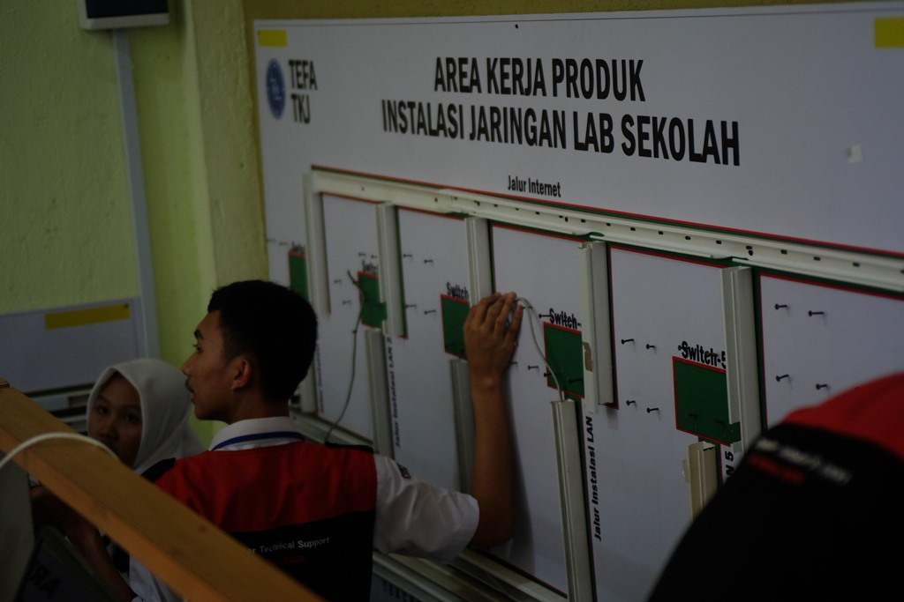

SEJARAH SMK WIKRAMA BOGOR
SMK Wikrama Bogor didirikan oleh Ir. Itasia Dina Sulvianti dan Dr.H.RP Agus Lelana dibawah naungan Yayasan Prawitama pada tahun 1996 di bekas gudang KUD. Kompetensi keahlian yang pertama dibuka pada saat itu adalah sekretaris dengan jumlah hanya 34 siswa.
Seiring berjalannya waktu, jumlah siswa SMK Wikrama Bogor setiap tahunnya terus bertambah. Sehingga pada tahun 2001, secara bertahap SMK Wikrama Bogor menempati gedung yang lebih luas diatas tanah ± 5000m2, berlokasi di Jalan Raya Wangun Kelurahan Sindangsari Kota Bogor. Hingga saat ini, SMK Wikrama Bogor memiliki 1596 siswa dengan 51 guru pendidik.
Kompetensi keahlian di SMK Wikrama Bogor pun terus berkembang. SMK Wikrama Bogor membuka 7 kompetensi keahlian, diantaranya (1) Otomatisasi dan Tata Kelola Perkantoran; (2) Teknik Komputer dan Jaringan; (3) Rekayasa Perangkat Lunak; (4) Multimedia; (5) Bisnis Daring dan Pemasaran; (6) Tata Boga; dan (7) Perhotelan.
Kesuksesan SMK Wikrama Bogor saat ini tentunya tidak lepas dari sejarah SMK Wikrama Bogor mulai dari membentuk visi dan misi, kerja keras hingga diakui dunia internasional hingga prestasi dan pengharagaan yang didapatkan SMK Wikrama Bogor sejak awal didirikan. Berikut sejarah yang dilalui SMK Wikrama Bogor berdasarkan urutan tahun.
1996
1997
1998
1999
2000
2001
2002
2003
2004
2005
2006
2007
2008
2009
2010
2011
2012
2013
2014
2015
SMK Wikrama mendapatkan Sertifikat Lisensi untuk menjadi Lembaga Sertifikasi Profesi pada paket keahlian Multimedia
2016
2017
JURUSAN SMK WIKRAMA :
1. Pengembangan Perangkat Lunak dan Gim (PPLG/RPL)

Berdiri/Akreditasi:
Didirikan pada Tahun 2003 dengan akreditasi A (amat baik)
Keahlian :
1.Memiliki kemampuan menjelaskan dan menerapkan ilmu matematika dan ilmu komputer dasar sebagai basis pembangunan sebuah perangkat lunak yang berkualitas.
2.Memiliki kemampuan menjelaskan, menerapkan, dan memilih berbagai teori, model, teknik dan teknologi yang tepat dalam pembangunan perangkat lunak yang berkualitas pada lingkungan berbasis web, desktop dan mobile.
3.Merancang solusi perangkat lunak berbasis web, desktop dan mobile dalam berbagai skala kompleksitas yang mengintegrasikan persoalan ethical, social, legal, security dan ekonomi.
4.Terampil menggunakan teknologi dan tools terkini dalam pembangunan perangkat lunak yang berkualitas pada lingkungan berbasis web dan mobile.
5.Menerapkan profesionalisme dalam berkarya sesuai dengan etika bidang Rekayasa Perangkat Lunak.
6.Berkomunikasi secara efektif pada berbagai kalangan baik secara lisan maupun tulisan.
7.Mengikuti perkembangan berbagai teknik, teknologi dan tools baru dalam bidang rekayasa perangkat lunak pada lingkungan berbasis web, desktop dan mobile.
8.Bekerjasama secara efektif baik sebagai anggota tim maupun pemimpin tim pada proyek pembangunan perangkat lunak.
9.Mengidentifikasi kebutuhan untuk menjadi seorang wirausaha/pebisnis dibidang industri kreatif khususnya dalam pengembangan perangkat lunak.
Model Belajar :
Teaching Factory
Competency Based Training
Kegiatan Competency Based Training (CBT) bertujuan untuk menumbuhkembangkan karakter dan etos kerja (disiplin, tanggung jawab, jujur, kerjasama, kepemimpinan, dan lain-lain) yang dibutuhkan DU/DI serta meningkatkan kualitas hasil pembelajaran. Kegiatan CBT Rekayasa Perangkat Lunak meliputi kegiatan dimulai dari mencari proyek baik dari internal/eksternal sekolah, mengidentifikasi kebutuhan pemberi proyek (requirements), melakukan desain proyek (design), melakukan implementasi (coding), dan melakukan pengujian proyek (testing).
Keunggulan :
Desktop Programming, Web Programming, Mobile Programming, Bussiness Analyst, Database Administration.
Mitra Industri:
Fasilitas dan Sarpras:
Lab, software house, Teaching Factory
Sertifikasi:
TOEIC Test (Test of English International Communication), Microsoft Technology Associate (Office, HTML 5, Database Fundamental)
2. Desain Komunikasi Visual (DKV/MMD)

Berdiri/Akreditasi:
Didirikan pada tahun 2011 dan sudah mendapat akreditasi A.
Keahlian :
Model Belajar
Teaching Factory
Keunggulan
Lulusan dapat memiliki kesempatan kerja yang luas dibidang periklanan, production house, radio & televisi, studio foto, percetakan grafis, corporate brand identity, penerbit majalan/Koran, dll.
Fasilitas dan Sarpras :
Kompetensi keahlian Multimedia memiliki beberapa fasilitas serta sarana & prasarana yaitu laboratorium studio foto, laboratorium komputer editing, ruang belajar bersama, alat rekam audio digital, komputer rendering, kamera mirrorless dan DSLR.
Sertifikasi:
LSP (Lembaga Sertifikasi Profesi), BNSP (Badan Nasional Sertifikasi Profesi), TOEIC (Test of English for International Communication), Adobe.
3. Teknik Jaringan Komputer dan Telekomunikasi (TJKT/TKJ)
Berdiri/Akreditasi :
Kompetensi keahlian Teknik Komputer dan Jaringan didirikan pada tahun 2004 dan sudah memiliki akreditasi A
Keahlian:
Model Belajar
Teaching Factory
Competency Based Training
Beberapa CBT pada kompetensi keahlian Teknik Komputer dan Jaringan di antaranya keahlian, lingkungan dan kewirausahaan.
Keunggulan
Kompetensi keahlian Teknik Komputer dan Jaringan sudah memiliki sertifikasi internasional seperti CNAP (Cisco Networking Academy Program) dan MCNA (Mikrotik Certified Network Associate).
Fasilitas dan Sarpras:
Laboratorium perakitan, perbaikan dan perawatan komputer, laboratorium instalasi jaringan LAN dan laboratorium instalasi jaringan WAN.
Sertifikasi:
TOEIC (Test of English for International Communication), CNAP (Cisco Networking Academy Program), MCNA (Mikrotik Certified Network Associate)
4. Manajemen Perkantoran dan Layanan Bisnis (MPLB/OTKP)

Berdiri/Akreditasi :
Kompetensi keahlian Otomatisasi dan Tata Kelola Perkantoran/Administrasi Perkantoran didirikan pada tahun 1996 dengan akreditasi A (amat baik)
Keahlian :
Model Belajar
Teaching Factory
Competency Based Training
CBT dilakukan selama 5 hari oleh peserta didik kelas XI, dari pukul 07.30 s/d 16.00 WIB ditempatkan diberbagai unit seperti tata usaha, kurikulum, kesiswaan, koperasi, perpustakaan, ruang kepala jurusan, guru mata pelajaran, BP/BK.
Keunggulan
Kompetensi keahlian Otomatisasi dan Tata Kelola Perkantoran/Administrasi Perkantoran memiliki keunggulan dibidang prestasi peserta didik seperti juara II lomba keterampilan siswa bidang lomba sekretaris tingkat provinsi tahun 2016 dan juara I lomba olimpiade sekretaris tingkat nasional tahun 2017
Sertifikasi:
TOEIC (Test of English for International Communication), tes mengetik internasional (typingweb.com), Microsoft Office Specialist (MOS - Certiport)
5. Pemasaran (PMN/BDP)
Berdiri/Akreditasi:
Kompetensi keahlian Bisnis Daring dan Pemasaran didirikan pada tahun 2014, dan dan memperoleh akreditasi dari Badan Akreditasi Nasional Sekolah/Madrasah (BAN-SM) dengan nilai A.
Keahlian:
Model Belajar
Teaching Factory
Competency Based Training
CBT pada kompetensi keahlian Pemasaran dilakukan dengan cara memberikan penugasan kepada siswa/i berupa proyek. Siswa/i membantu para pemilik usaha pada UMKM dalam mengoptimalkan usaha (pemasaran online).
Keunggulan
Kompetensi keahlian Bisnis Daring dan Pemasaran memiliki kompetensi yang mirip dengan program Multimedia dan Perkantoran. Lulusan program ini diharuskan mampu membuat foto produk, desain, copy writing, dll.
Mitra Industri:
Fasilitas dan Sarpras:
Kompetensi keahlian Bisnis Daring dan Pemasaran memiliki fasilitas serta sarana & prasarana yang menunjang seperti laboratorium komputer, laboratorium jurusan (wikrama shop), ruang teori.
Sertifikasi:
TOEIC, (Test of English for International Communication) Microsoft Office Specialist (MOS Certiport), Marketing Online
6. Kuliner (KLN/TBG)

Tata boga adalah ilmu pengetahuan mengenai boga (seni mengolah masakan) yang meliputi persiapan pengolahan sampai dengan menghidangkan makanan itu sendiri yang bersifat tradisional maupun Internasional
Kompetensi Keahlian Tata Boga, merupakan salah satu jurusan atau kompetensi yang memberikan Pelajaran di bidang Pengolahan dan Penyajian Makanan baik oriental maupun kontinental serta mampu memberikan pelayanan makanan dan minuman di restoran (Food and Beverage Service).
Berdiri/Akreditasi :
Kompetensi keahlian Tata Boga didirikan pada tahun 2017 dan terakreditasi B (baik)
Keahlian :
Competency Based Training
CBT pada kompetensi keahlian Tata Boga di antaranya CBT kewirausahaan, CBT pendidikan lingkungan hidup, CBT humas dan CBT produktif.
Keunggulan
Siswa jurusan Tata Boga mampu bekerja diberbagai bidang jasa boga seperti restoran, hotel, rumah sakit, katering sesuai dengan minat dan bakat yang telah dipelajari.
Mitra Industri :
Fasilitas dan Sarpras :
Laboratorium Praktikum Pengolahan dan Penyajian, Laboratorium Tata Hidang dan Ruang Teori.
Prestasi :
Prospek Profesi dan Karir :
7. Perhotelan (HTL)

Berdiri/Akreditasi :
Kompetensi keahlian Perhotelan didirikan pada tahun 2017 dan menjadi jurusan ke-7 di SMK Wikrama Bogor, dengan nilai akreditasi B (baik)
Keahlian:
Competency Based Training
CBT untuk kompetensi keahlian Perhotelan yaitu terdiri dari CBT kewirausahaan, kantin, humas dan CBT produktif.
Keunggulan
Siswa jurusan Perhotelan akan mampu bekerja di departemen yang ada di hotel dengan kompetensi yang mereka pelajari.
Fasilitas dan Sarpras :
Ruang khusus teori, ruang praktikum, miniatur hotel.
Sertifikasi:
TOEIC (Test of English for International Communication) dan sertifikasi pariwisata dari BNSP.
FASILITAS SMK WIKRAMA :

Kantin Sehat Wikrama
SMK WIKRAMA BOGOR - Kantin Wikrama berdiri tahun 2004. Namun, di tahun 2017 kantin mulai berbenah diri menjadi kantin sehat. Predikat kantin sehat tersebut dinobatkan langsung oleh Dinas Kesehatan Kota Bogor setelah melakukan penilaian terhadap kantin Wikrama di tahun 2017. Hal tersebut karena, SMK Wikrama melihat sebagian besar aktivitas peserta didik berada di lingkungan sekolah, sehingga sudah menjadi tanggung jawab warga sekolah untuk memperhatikan kesehatan peserta didiknya, mulai dari makanan.
Berbagai aspek penunjang kesehatan peserta didik sangat diperhatikan, mulai dari cara pengolahan makan, sarana yang digunakan, penjamah (pelayan) makanan, kebersihan tempat, serta perilaku konsumen. Menu makanan yang dijajakan di kantin sehat SMK Wikrama sangat beragam. Beberapa makanan yang diproduksi koki Wikrama antara lain, makanan berat (nasi dan berbagai lauknya), soto, mie ayam, dan sebagainya.
Selain itu, kantin sehat Wikrama juga menjadi sumber penghasilan bagi warga sekitar, karena ada beberapa makanan yang dipasok dari luar. Akan tetapi makanan tersebut tetap harus memerhatikan beberapa ketentuan yang telah ditetapkan. Pertama tidak boleh menggunakan plastik atau kertas (sesuai budaya Wikrama), dilarang menggunakan zat berbahaya dalam makanan (vetsin, pewarna tekstil, formalin dan sebagainya). Kemudian tidak diperkenankan juga menjual makanan yang menggunakan bumbu perasa (rasa jagung, keju, dan sebagainya).
Triwahyuni selaku koordinator atau manager kantin mengungkapkan, zat yang tidak boleh digunakan dalam makanan yang dijual di kantin SMK Wikrama diantaranya, pewarna, penggurih (vetsin/micin), bahan pengawet, formalin, dan bahan berbahaya lainnya. Zat berbahaya apabila terus dikonsumsi maka akan berdampak negatif. Apabila ditinjau dari jangka pendek, maka sering kita temuai penyakit diare atau keracunan makanan. Dampak jangka panjang salah satunya penyakit kanker, dan penyakit berbahaya lainnya.
Ia menjelaskan, agar makanan yang dijual tetap terasa enak, maka penggunaan zat-zat berbahaya tersebut diganti dengan bahan alami. Contohnya, penggunaan vetsin pada makanan, bisa disiasati dengan takaran gula pasir dan garam yang diseimbangkan., selain itu penggunaan bumbu kemiri juga dapat menghasilkan rasa gurih, ditambah dengan, gula merah, tomat, dan gula batu. “Selanjutnya, untuk pewarna, bisa digantikan dengan kunyit untuk warna kuning, merah buah bit, dan hijau dari daun suji,” tambah Triwahyuni.
Berkat kesungguhan pengurusnya dan seluruh warga sekolah yang mendukung, kantin sehat Wikrama termasuk dalam sekolah pilihan yang direkomendasikan untuk diteliti langsung oleh Badan Pengawas Obat dan Makanan (BPOM). Hal tersebut terjadi berdasarkan laporan Dinas Kesehatan (Dinkes) Kota Bogor tentang kantin sehat di SMK Wikrama Bogor. Akhirnya pada 15 Oktober 2018, kantin sehat Wikrama mendapatkan kunjungan dari anggota Puskesmas Pulo Armin, Dinkes Kota Bogor dan BPOM.
Kunjungan itu dilakukan dalam rangka penilaian terhadap keamanan pangan di SMK Wikrama. Penilaian yang dilakukan mulai dari cara menyimpan, mengolah, dan menyaji makanan yang baik. Selanjutnya dari keamanan panggan, serta perilaku konsumen (apakah sekolah telah memberikan pemahaman terhadap peserta didiknya dan penjaga sekolahnya).
Hasil dari penilaian tersebut, kantin sehat SMK Wikrama meraih nilai 95 dari skala 100. Nilai yang cukup memuaskan. Feri Firmansyah selaku pembina kantin sehat mengemukakan “Evaluasi penilaian tersebut yaitu bahwa kantin sehat perlu meerhatikan cara penanganan hama serta cara menyimpan makanan mentah dan matang perlu diperhatikan lagi.”
Feri Juga membeberkan bahwa untuk kedepannya kantin sehat SMK Wikrama harus lebih baik. “Kantin Wikrama harus terus berkembang, tetap konsisten, dan memberikan yang terbaik untuk konsumen SMK Wikrama,” Beber Feri. (SH/MF/GU/IU)

Perpustakaan
Perpustakaan SMK Wikrama Bogor berada di Kampus SMK Wikrama Bogor Kelurahan Sindangsari, Kecamatan Bogor Timur, Kota Bogor didirikan pada tahun 1996. Secara fisik perpustakaan sekolah terletak di lantai 2 (dua) gedung Pajajaran yang merupakan gedung pertama yang dibangun, tepatnya berada di area bangunan seluas 96 m2. Lokasi ini berada di pusat kegiatan pembelajaran yang mudah dijangkau oleh peserta didik, pendidik dan tenaga kependidikan. Semenjak didirikan, keberadaan ruang perpustakaan SMK Wikrama Bogor memberikan manfaat bagi sivitas akademik sekolah bahkan masyarakat sekitar sekolah.
Visi
"Menjadi perpustakaan sekolah teladan berbasis Teknologi Informasi dan Komunikasi"
Misi
Motto
“Melayani dengan Hati dan Teknologi”
Perpustakaan Online
SMK Wikrama juga mempunyai fasilitas Perpustakaan Online yang bisa diakses melalui Perpustakaan SMK WIKRAMA.
Dalam mendukung PJJ (Pembelajaran Jarak Jauh) dan New Normal, Perpustakaan SMK Wikrama Indonesia telah membuat fiture WikBook Wikrama Electronic Book. WikBook adalah sebuah aplikasi berbasis animasi flash yang memiliki konten lebih dari 600 judul ebook. Terdiri dari buku teks (buku pegangan siswa) fiksi & nonfiksi yang dapat diakses dan didownload melalui laman website http://perpus.smkwikrama.sch.id/
Tentang SMK WIKRAMA
Alamat
Jl. Raya Wangun Kelurahan Sindangsari Bogor Timur 16720
Telepon
0251-8242411 / 082221718035 (Whatsapp)